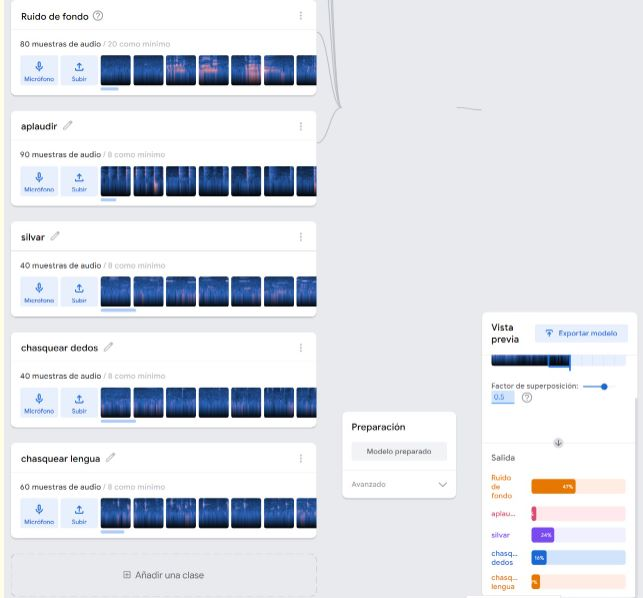
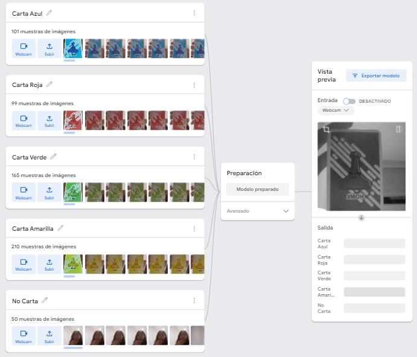
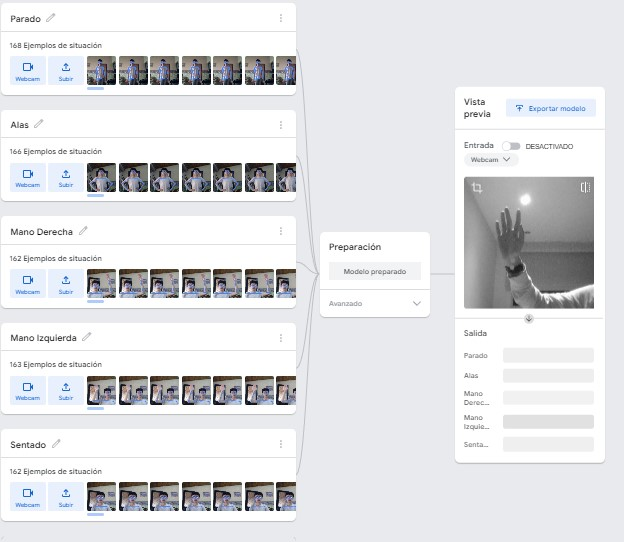

Esta página usa la tecnología de Teachable Machine 2.0, una herramienta desarrollada por Google. Se trata de una plataforma de Inteligencia Artificial que permite al usuario entrenar de manera independiente a una red neuronal.
Ve a la sección Ingresar
Selecciona el tipo de modelo que deseas utilizar (imagenes,sonidos o posturas)
Las muestras del modelo ya estan previamente cargadas, para usarlas, permite el acceso a la cámara o micrófono de tu dispositivo.
Lee atentamente las categorias allí puestas y comienza a probarlas.
Observa como los porcentajes de la parte inferior cambian dependiendo de la similitud que detecte.
Modelo de audio
Modelo de imágenes
Modelo de posturas
